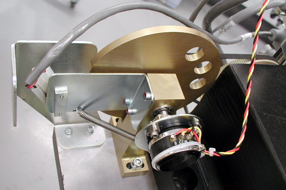

Operating Documentation
Direction 5196839-800, Rev# 6
RT16 and Xtra Service Info Adv
Operating Documentation |
| Required Persons | Preliminary Reqs | Procedure | Finalization |
|---|---|---|---|
| 1 |
This procedure defines the process required to replace the tilt potentiometer and test the system.
| Last Revised: | 23 January 2008 |
| Item | Qty | Effectivity | Part# | Manufacturer | |
|---|---|---|---|---|---|
| ESD Wrist-Band | 1 | - | - | - | |
| 3 mm hex key | 1 | - | - | - | |
| Voltmeter (DC) | 1 | - | - | - | |
| Shock Hazard | |
| Voltage Present | |
| No service on left side while energized. |
Remove all covers except back cover. All work shall be performed from the left, front corner.
Turn OFF the Axial Drive and HVDC switches on the gantry’s Service Switch Panel.
Turn OFF the 120VAC switch.
Perform all required LOTO activities.
Loosen the two (2) hex screws that mount the Tilt Pot Assembly to the gantry assembly.
Remove the belt from the 32-tooth pulley on the Tilt Pot Assembly.
Remove connectors from the Tilt Pot Assembly. See Illustration 1.
Illustration 1: Gantry Tilt Pot Assembly Connectors

On the TGPU board, remove J2 and J7.
Remove two (2) hex screws that secure the Tilt Pot Assembly.
Remove the Tilt Pot Assembly.
Reverse the above steps to install the new Tilt Pot Assembly
Adjust the pot per Gantry Tilt Pot Adjustment including Tilt characterization as defined in the pot adjustment procedure.